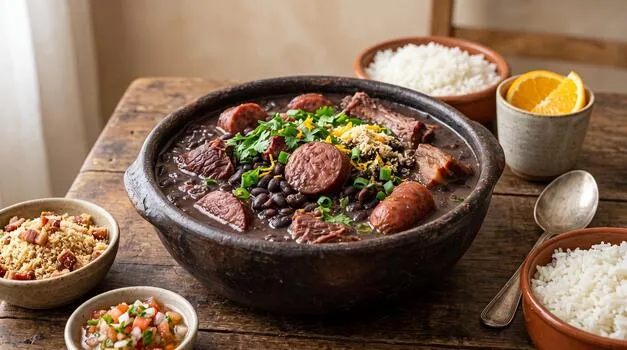

Traditional Brazilian Feijoada

Description
A hearty Brazilian black bean stew simmered with smoked sausages, beef chunks, and pork ribs, topped with fresh herbs and orange zest. Served in a traditional clay pot, this rich dish is accompanied by fluffy white rice, crunchy bacon farofa, fresh tomato vinaigrette, and sliced oranges.
To prepare the stew, soaked black beans are slow-cooked with seared meats, garlic, and bay leaves until the broth becomes thick and deeply flavorful. The classic side dishes balance the richness of the beans and smoked meats.
Ingredients
- Dried black beans (soaked overnight)
- Smoked sausage (calabresa or paio), sliced
- Beef chunks and pork ribs
- Diced bacon (for the stew and farofa)
- White rice
- Toasted cassava flour (farofa)
- Fresh oranges, sliced into wedges
- Tomatoes, onions, and fresh herbs (for vinaigrette and garnish)
- Garlic, bay leaves, black pepper, and salt
Steps
- Drain the soaked black beans and place them in a large pot with fresh water, bay leaves, and the beef and pork cuts, simmering until tender.
- Brown the sliced smoked sausage and bacon in a skillet with minced garlic and onion, then add them to the beans and simmer until the broth thickens.
- Cook the white rice with garlic and a pinch of salt until light and fluffy.
- Toast the cassava flour with crispy bacon bits in a pan until golden for the farofa, and mix diced tomatoes, onions, vinegar, olive oil, and herbs for the vinaigrette.
- Garnish the feijoada with chopped scallions, fresh cilantro, and orange zest, serving it hot alongside the rice, farofa, vinaigrette, and orange slices.
Home